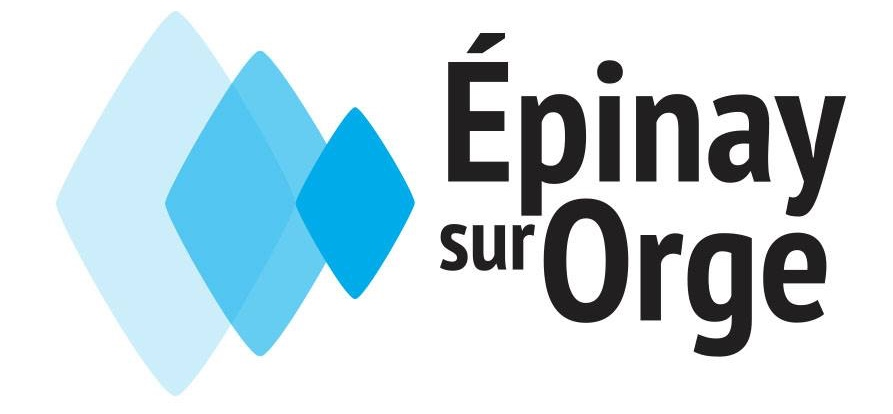

Améliorez l’efficacité de votre chauffage avec notre service de désembouage à Épinay-sur-Orge

Une intervention essentielle pour un chauffage performant
Au fil du temps, les installations de chauffage central subissent une accumulation de dépôts dans leurs circuits. Ces résidus, composés de boues, de particules métalliques et de calcaire, perturbent la circulation de l’eau et diminuent les performances globales du système. À Épinay-sur-Orge (91360), notre entreprise spécialisée vous propose des solutions de désembouage efficaces pour restaurer le bon fonctionnement de votre installation.
Nous accompagnons aussi bien les particuliers que les professionnels, en intervenant sur tous types de systèmes : chaudières, radiateurs, planchers chauffants ou pompes à chaleur. Grâce à notre expertise et à des techniques adaptées, nous vous garantissons un nettoyage complet, durable et conforme aux normes actuelles.
Comment détecter un embouage dans votre circuit de chauffage ?
L’embouage s’installe progressivement, mais plusieurs signes peuvent vous alerter :
- Des radiateurs qui chauffent mal ou de manière inégale
- Des zones froides persistantes sur certains émetteurs
- Des bruits anormaux dans les tuyauteries
- Une eau de purge trouble ou foncée
- Une augmentation de vos factures énergétiques
Ces symptômes indiquent généralement un encrassement du circuit. Une intervention rapide permet d’éviter une dégradation plus importante de votre installation.
En moyenne, il est conseillé de réaliser un désembouage tous les 5 à 10 ans. Cette opération est également indispensable avant l’installation d’un nouvel équipement de chauffage.
Pourquoi faire appel à un spécialiste du désembouage à Épinay-sur-Orge ?
Le désembouage est une opération technique qui nécessite des compétences spécifiques. Une mauvaise manipulation peut entraîner des dommages sur votre installation.
Faire appel à notre entreprise, c’est bénéficier :
- D’un diagnostic précis et fiable
- D’une intervention sécurisée et adaptée à votre système
- Du respect des normes en vigueur
- De conseils personnalisés pour optimiser votre consommation énergétique
Nos techniciens qualifiés interviennent rapidement à Épinay-sur-Orge pour vous garantir un résultat efficace et durable.
Notre processus d’intervention
1. Analyse de votre installation
Nous réalisons un diagnostic complet de votre système de chauffage afin d’identifier les zones obstruées. L’utilisation d’outils comme la caméra thermique permet de localiser précisément les anomalies.
2. Établissement d’un devis
Nous vous proposons un devis clair et détaillé avant toute intervention. Chaque étape vous est expliquée pour une parfaite transparence.
3. Nettoyage du circuit
Le désembouage est ensuite réalisé selon la méthode la plus adaptée à votre installation. L’intervention débute toujours par l’arrêt du système et la vidange complète.
Nous utilisons plusieurs techniques :
- Nettoyage chimique doux
- Nettoyage chimique renforcé
- Désembouage hydropneumatique
4. Prévention et conseils
Après l’intervention, nous vous proposons des solutions pour éviter la formation de nouvelles boues et maintenir les performances de votre système.
Les avantages du désembouage
Un circuit propre offre de nombreux bénéfices :
- Une meilleure diffusion de la chaleur dans votre logement
- Une réduction significative de votre consommation énergétique
- Une diminution des pannes et dysfonctionnements
- Une durée de vie prolongée de vos équipements
- Un confort thermique optimal
Le désembouage permet ainsi d’optimiser votre installation tout en réalisant des économies sur le long terme.
Nos techniques de désembouage à Épinay-sur-Orge
Le nettoyage chimique doux
Cette méthode consiste à injecter un produit non agressif dans le circuit afin de dissoudre progressivement les boues. Elle est particulièrement adaptée aux installations anciennes ou fragiles.
Le nettoyage chimique renforcé
Lorsque les dépôts sont importants, nous utilisons des produits plus puissants pour éliminer le tartre et les résidus incrustés. Cette solution est idéale pour les circuits fortement encrassés.
Le désembouage hydropneumatique
Cette technique utilise de l’air et de l’eau sous pression pour décoller et évacuer les boues. Elle est rapide, efficace et compatible avec tous les types d’installations.
Prévenir l’embouage de votre système
Après un désembouage, il est essentiel de mettre en place des solutions préventives pour limiter l’accumulation des dépôts :
- Injection d’un inhibiteur de corrosion
- Installation d’un pot à boues magnétique
- Mise en place de systèmes de filtration
Ces solutions permettent de préserver durablement les performances de votre installation.
Votre spécialiste du désembouage à Épinay-sur-Orge (91360)
Notre entreprise met son expertise à votre service pour vous proposer des prestations fiables et adaptées à vos besoins. Que ce soit pour un entretien régulier ou une intervention en urgence, nous intervenons rapidement à Épinay-sur-Orge et dans les communes voisines.
Grâce à notre savoir-faire, vous améliorez les performances de votre chauffage, réduisez vos dépenses énergétiques et prolongez la durée de vie de vos équipements.
Contactez-nous dès maintenant pour obtenir un devis personnalisé et bénéficier d’un accompagnement sur mesure.
Contactez-nous au 01 69 25 77 54